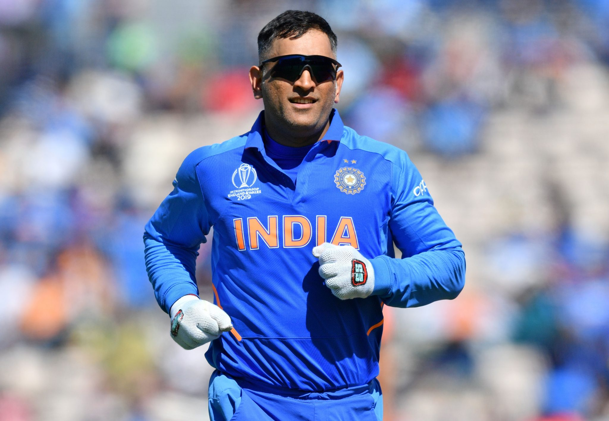

MAHENDRA SINGH DHONI
A cricketer

Mahendra Singh Dhoni , born 7 July 1981, commonly known as MS Dhoni, is a former Indian cricketer and captain of
the Indian national team in limited-overs formats from 2007 to 2017 and in Test cricket from 2008 to 2014, who plays as a Wicket-keeper-Batsman.
He is also the current captain of Chennai Super Kings in the Indian Premier League. Under his captaincy, India won the 2007 ICC World Twenty20,
the 2011 Cricket World Cup, and the 2013 ICC Champions Trophy, the most by any captain. He also led India to victory in the 2010 and 2016 Asia Cup.
Additionally, under his leadership, India won the 2010 and 2011 ICC Test Mace and 2013 ICC ODI Championship. He has scored 17,
266 runs in International Cricket (including 10,000 plus runs in ODI Internationals). Dhoni is a right-handed wicket-keeper batsman known for his calm captaincy
and his ability to finish matches in tight situations for these reasons he is considered one of the best finishers in the game ever, as well as one of the greatest
wicket-keepers and captains in the history of cricket.Born in Ranchi, Bihar (now in Jharkhand), His exceptional wicketkeeping skills allowed him to become
the regular wicketkeeper at the Commando Cricket Club (1995–1998), he was picked for the 1997/98 season Vinoo Mankad Trophy Under-16 Championship, where he performed well.
From 2001 to 2003, He worked as a Travelling Ticket Examiner at Kharagpur railway station under South Eastern Railway in Midnapore, in West Bengal.In Indian domestic
cricket he played for Bihar and then for Jharkhand Cricket team. Dhoni's performance in the 2002–03 season included three half-centuries in the Ranji Trophy and a couple
of half-centuries in the Deodhar Trophy,as he started gaining recognition for his lower-order contribution as well as hard-hitting batting style.
M S DHONI Awards and Accolades
- 2018: Padma Bhushan, India's third-highest civilian award.
- 2009: Padma Shri, India's fourth-highest civilian award.
- 2007–08: Major Dhyanchand Khel Ratna award, India's highest honor given for achievement in sports.
- MTV Youth Icon of the Year: 2006.
- LG People's Choice Award: 2013.
- Honorary doctorate degree by De Montfort University in August 2011.
- In 2019, the Jharkhand Cricket Association named their stadium's South stand after Dhoni – M.S. DHONI PAVILION.
- In 2023, the Mumbai Cricket Association (MCA) has decided to honour him by dedicating seats (J282–J286) at
the Wankhede Stadium where he hit the winning shot in 2011 World Cup Final.
- ICC Men's ODI team of the decade: 2011–2020 (captain and wicketkeeper)
- ICC Spirit of the cricket award of the decade: 2011–2020.
- Castrol Indian Cricketer of the Year: 2011.
“You learn a lot more when you’re going through a rough period compared to the good times when everything goes your way.”